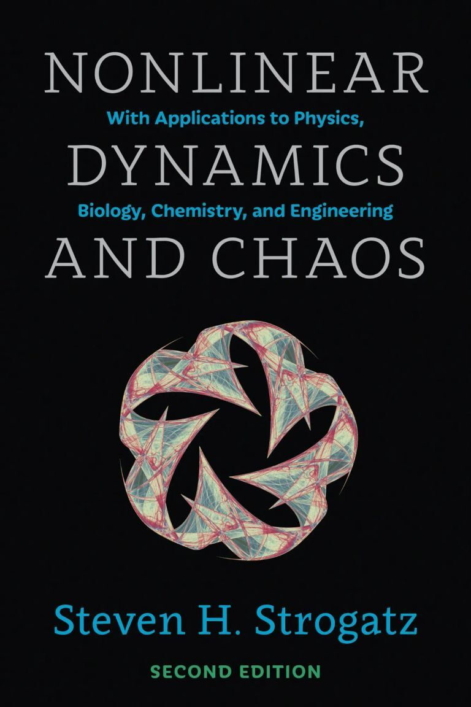

# Trip to Alaska - the northernmost sceneries
During the winter vacation in Jan 2023, I took a solo trip to Alaska, including Anchorage, Fairbanks and Yukon region, where I witnessed one of the most ethereal spectacles on Earth - Aurora borealis.
Due to the lack of convenient transportation and vehicles, I waited for 10 days to see the aurora.
The freezing temperature (~-30°C) restricted my movements to a great extent. For the most of the time, I stayed in the hotel and waited.
Yet it's still an unforgettable experience in my life. Below are some photos I shot on my iPhone 13 Pro with a tripod:
1 / 10
.JPG)
2 / 10
.JPG)
3 / 10
.JPG)
4 / 10
.JPG)
5 / 10
.JPG)
6 / 10
.JPG)
7 / 10
.JPG)
8 / 10
.JPG)
9 / 10
.JPG)
10 / 10
.JPG)
❮
❯
# My favorite book

I used this book -
Nonlinear Dynamics and Chaos by Steven Strogatz
when I took MATH 415,
my favourite course at UW-Madison. It covers many topics in physics, which I am really interested in but had seldom involved. This book covers first-order differential equations and their bifurcations, phase plane analysis, limit cycles and their bifurcations,
Lorenz equations, chaos, iterated maps, period doubling, renormalization, fractals, and the strange attractors, step by step with straightforward presentations and intuitive explanations. For example the chaotic waterwheel,
where the Lorenz attractors is introduced.
Anyway, its logic and way to explain questions really make it a great book to read, even for outsiders as a book for popular science. Strongly recommended.
* Later I found out the author is actually working in my graduate school. Such a coincidence!
Back to top↑